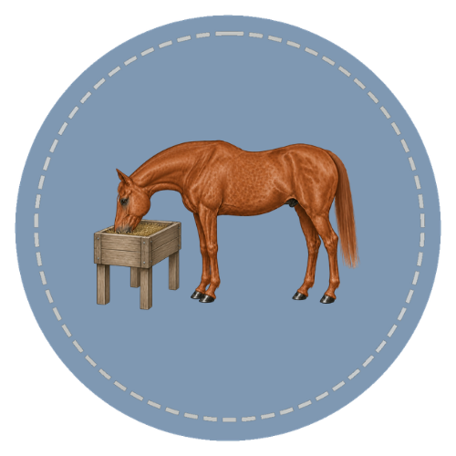

This course explains how a horse uses food, and what a horse needs to stay healthy.
You will learn how the horse's stomach and gut work, the main kinds of hay and grain, how to plan simple meals, and how to tell if a horse is too thin or too fat.
You will also learn the feeding mistakes that can make a horse sick. This gives you a strong start for making safe feeding choices.

Course Curriculum
Each lesson builds on the one before it. You learn step by step, with clear examples and practice.
Every lesson moves at your own pace. It includes Horse Bowl practice questions and tips you can use in a real barn.
Start the Course
Every feeding choice starts with how a horse's gut works. Begin here, and the rest of the course will make sense.
Start the Course